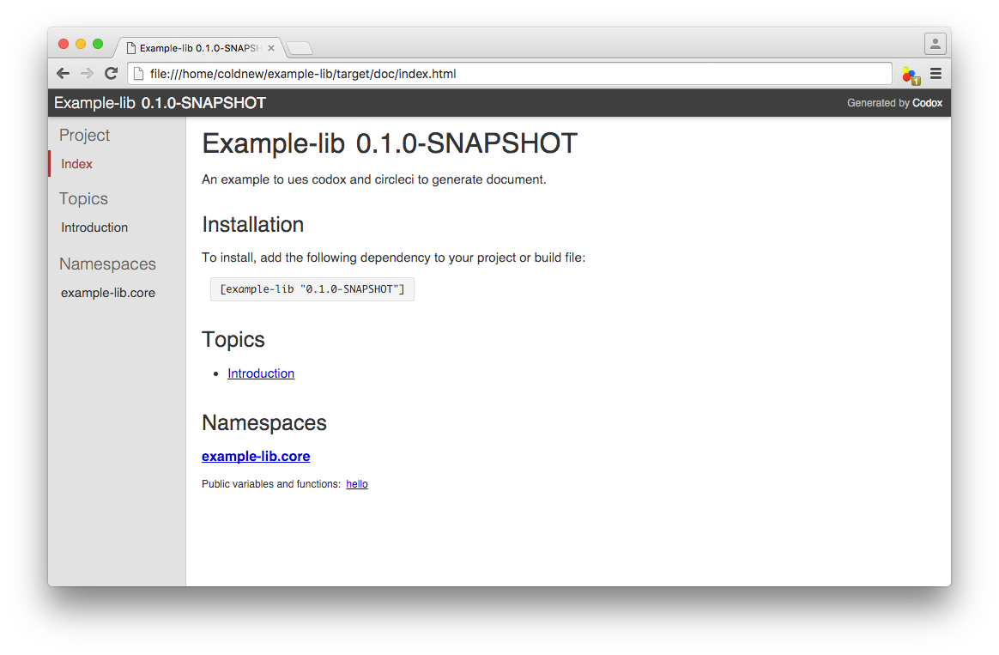
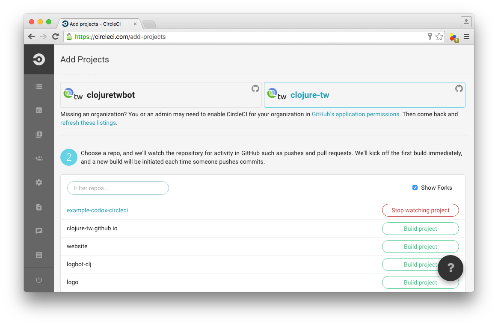
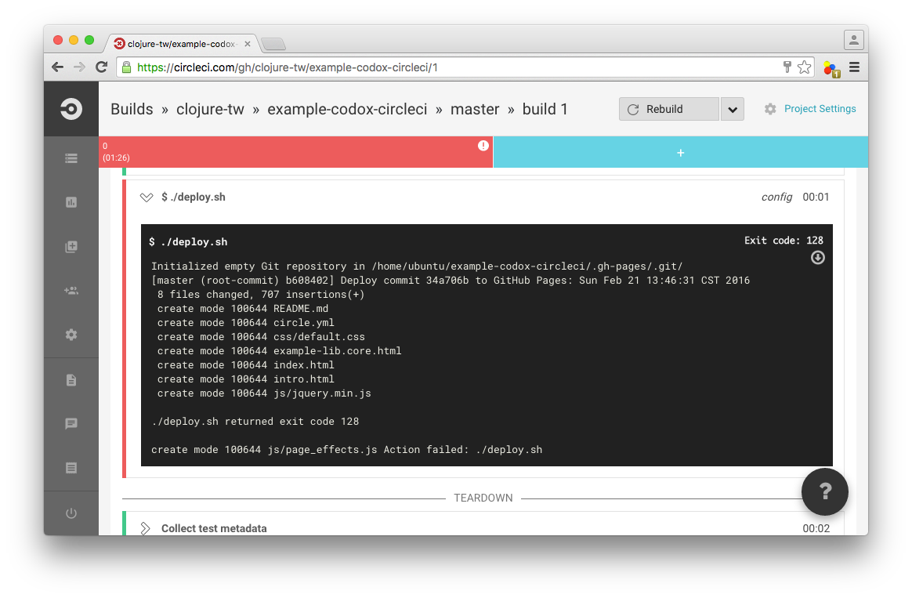
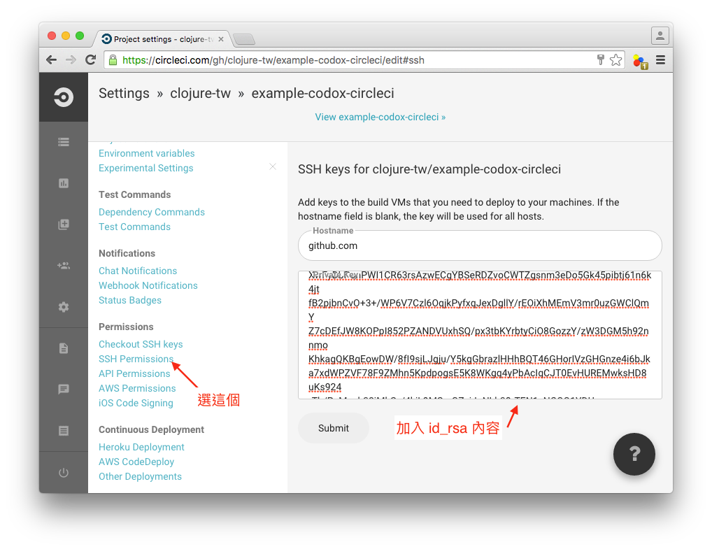
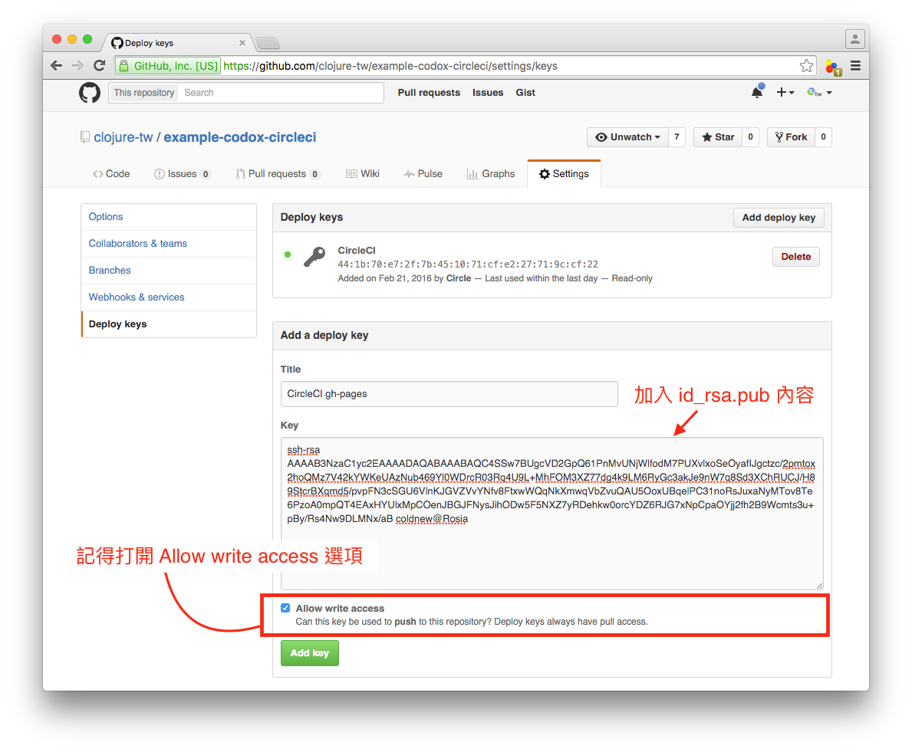

在 Clojure 世界中，常用的產生文檔工具有 Marginalia 以及 Codox。 本文將講述如何透過 Codox 以及 Circle CI 來對你的函式庫進行測試以及產生文檔並發佈到 GitHub pages 去。
當然，為了便於描述，我們一樣從專案的建立開始來講 codox 的使用。
建立我們的專案
首先我們先透過 leinigen 產生我們 Clojure 專案的基本樣板，這邊命名該專案為 example-lib
coldnew@Rosia ~ $ lein new example-lib
專案建立完成後，我們要稍微修改一下 project.clj ，在 :plugin 欄位加上 lein-codox, 這會讓我們多一個 lein codox 命令可以用來產生文檔。
(defproject example-lib "0.1.0-SNAPSHOT" ;; skip ... :plugins [[lein-codox "0.9.4"]])
如果你希望你產生的文檔，可以連接到 Github 上的程式碼，則可以多加上這樣一行
(defproject example-lib "0.1.0-SNAPSHOT" ;; skip ... ;; Add here to make codox can link function to github url :codox {:source-uri "https://github.com/clojure-tw/example-codox-circleci/blob/master/{filepath}#L{line}"})
加上基本的函式與測試
完成 project.clj 修改後，讓我們到 src/example_lib/core.clj 去加入我們的基本函式，這邊建立一個名為 hello 的函式，功能就是回傳 Hello, World! 這個字串回來。
(ns example-lib.core) (defn hello "Say `Hello World!'." [] "Hello, World!")
接下來修改 test/example_lib/core_test.clj , 並加入我們的測試，以此例而言，我們需要確認 (hello) 回傳的會是 Hello, World! 這個字串:
(ns example-lib.core-test (:require [clojure.test :refer :all] [example-lib.core :refer :all])) (deftest a-test (testing "Hello, World!" (is (= (hello) "Hello, World!"))))
完成後，你可以使用 lein test 確認你的測試是成功的
coldnew@Rosia ~/example-lib $ lein test lein test example-lib.core-test Ran 1 tests containing 1 assertions. 0 failures, 0 errors.
使用 codox 產生文檔
當我們的函式庫完成後，就可以使用 lein codox 產生我們的文檔
coldnew@Rosia ~/example-lib $ lein codox Generated HTML docs in /home/coldnew/example-lib/target/doc
你會在 target/doc 發現你產生的文檔
coldnew@Rosia ~/example-lib/target/doc $ tree -L 1 . . <b> ├── css <b> ├── example-lib.core.html ├── index.html ├── intro.html └── js <b> 2 directories, 3 files
其中的 intro.html 是產生自 doc/intro.md 這個檔案，也就是說，你可以透過 codox 產生你的函式文檔外，讓他也幫你產生 doc/ 資料夾下的那些 markdown 語法的文件。
coldnew@Rosia ~/example-lib/doc $ tree -L 1 . . <b> └── intro.md 0 directories, 1 file
打開 index.html 會看到這樣的結果

讓 Circle CI 發佈你的文檔到 gh-pages
circle.yml
我們切回專案目錄，並建立 circle.yml 這個檔案
coldnew@Rosia ~/example-lib $ touch circle.yml
接下來編輯 circle.yml 加入我們的設定
general: branches: ignore: - gh-pages machine: timezone: Asia/Taipei java: version: oraclejdk8 dependencies: pre: - wget -O lein https://raw.githubusercontent.com/technomancy/leiningen/stable/bin/lein - chmod 755 lein - ./lein -v - ./lein deps cache_directories: - ~/.m2 - ~/.lein test: override: - ./lein test
在 circle.yml 中，我們告訴了 Circle CI 要忽略掉 gh-pages 這個分支，並且使用 lein test 確保我們的函式不會在未來因為修改而違反我們在測試程式中寫的規範。
接下來，我們在 circle.yml 加上發佈的方法，我們使用 lein codox 產生我們的文檔後，透過 deploy.sh 去進行發佈到 gh-pages。
deployment: publish: branch: master commands: - ./lein codox - sed -i 's%https://${GH_TOKEN}@${GH_REF}%git@github.com:clojure-tw/example-codox-circleci.git%g' deploy.sh - ./deploy.sh
deploy.sh
接下來編輯 deploy.sh 這個腳本，主要的任務如下:
- 建立一個 repo 資料夾
- 將該複製的文檔複製過去
- 設定好 git 相關資訊
- 上傳到 gh-pages
因此我們就可以根據 codox 會產生文檔到 target/doc 這個規則來寫我們的 deploy.sh 腳本。
#!/usr/bin/env bash # exit with nonzero exit code if anything fails set -e # Local variables OUT=".gh-pages" ID=$(git rev-parse --short HEAD) DATE=$(date) # clear and re-create the out directory rm -rf $OUT || exit 0; # create repo directory mkdir $OUT # Copy all prebuild files cp README.* $OUT cp -R target/doc/* $OUT cp -f circle.yml $OUT # go to the out directory and create a *new* Git repo cd $OUT git init # inside this git repo we'll pretend to be a new user git config user.name "Circle CI" git config user.email "clojure.tw@gmail.com" # The first and only commit to this new Git repo contains all the # files present with the commit message "Deploy to GitHub Pages". git add . git commit -m "Deploy commit $ID to GitHub Pages: $DATE" # Force push from the current repo's master branch to the remote # repo's gh-pages branch. (All previous history on the gh-pages branch # will be lost, since we are overwriting it.) We redirect any output to # /dev/null to hide any sensitive credential data that might otherwise be exposed. git push --force --quiet "https://${GH_TOKEN}@${GH_REF}" master:gh-pages > /dev/null 2>&1
將你的專案加入到 CircleCI
該設定的東西設定好了以後，我們將程式碼上傳到 GitHub 就可以將專案加入到 CircleCI 去

第一次編譯的時候你會發現失敗在 deploy.sh 這裡，這是因為 CircleCI 沒有權限可以將你產生的文檔上傳到 GitHub 去

為了解決這個問題，我們需要產生一對 SSH key 來讓 CircleCI 可以上傳到 GitHub, 首先進入你在 CircleCI 上的 Project Settings 頁面，接著我們透過 ssh-keygen 這命令去產生我們的鑰匙對，並設定為免密碼。
coldnew@Rosia ~/example-lib $ ssh-keygen Generating public/private rsa key pair. Enter file in which to save the key (/Users/coldnew/.ssh/id_rsa): id_rsa Enter passphrase (empty for no passphrase): Enter same passphrase again: Your identification has been saved in id_rsa. Your public key has been saved in id_rsa.pub. The key fingerprint is: SHA256:CbSAl++hyYfrbK4/CdbCLZDzFj33Kl750F+jaT1SV8k coldnew@Rosia The key's randomart image is: +---[RSA 2048]----+ | .... | | . oo . | | . o .o . .| |+ . o +. . E.| | = = B oS . | | O B oo. . . | | o + ++.. oo. | | .*..o .o+o. | | .B*o ..+. . | +----[SHA256]-----+
於是在當前目錄你就有 id_rsa 以及 id_rsa.pub 兩個檔案，將 id_rsa 裡面的內容貼到 CircleCI 去, 並指派 Hostname 為 github.com 。

接下來到你該專案的 GitHub 頁面去，我們進入到這個專案的 Deploy keys 頁面，將 id_rsa.pub 貼上。

都完成後，讓 CircleCI 對你專案進行 Rebuild 的動作，你就會看到你的 gh-pages 多出了新建立的文檔囉。
取得本文的範例
本文的範例已經上傳到 GitHub, 你可以透過以下命令下載到本地來查看
coldnew@Rosia ~ $ git clone https://github.com/clojure-tw/example-codox-circleci.git
產生出來的線上文件則可以到 http://clojure-tw.github.io/example-codox-circleci/ 去看。
Happy Coding :)